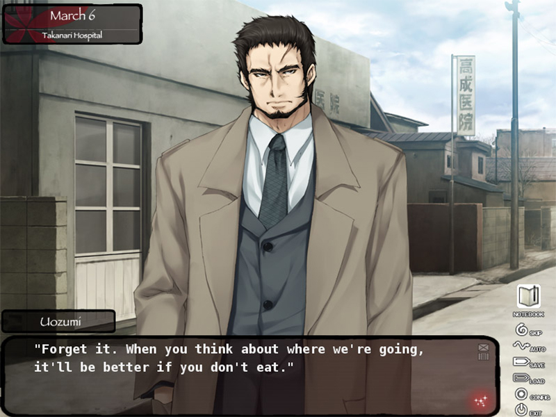
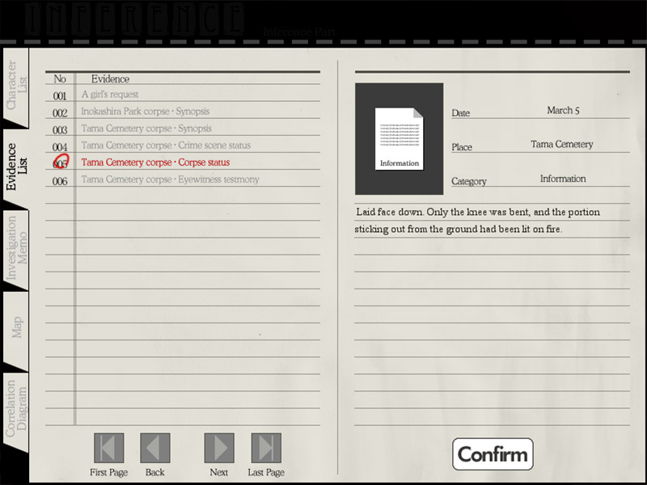
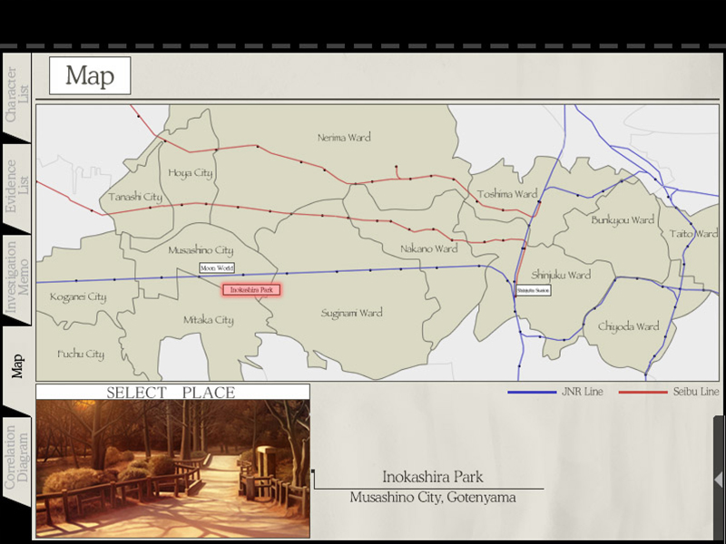
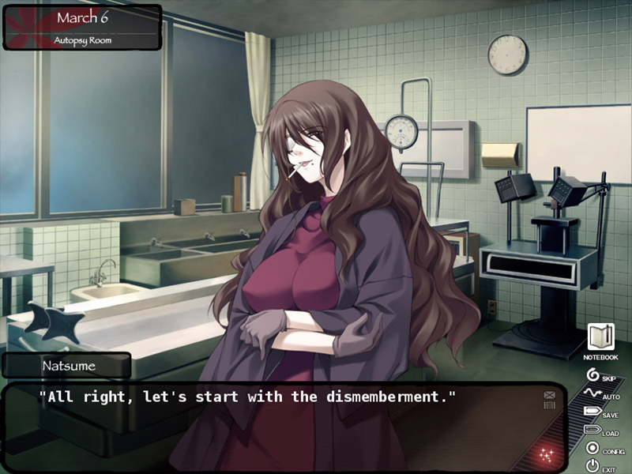
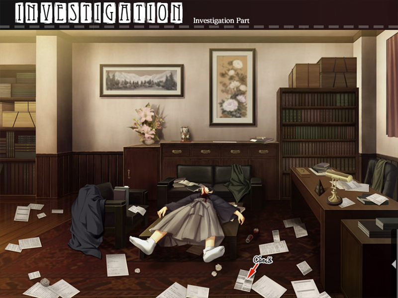
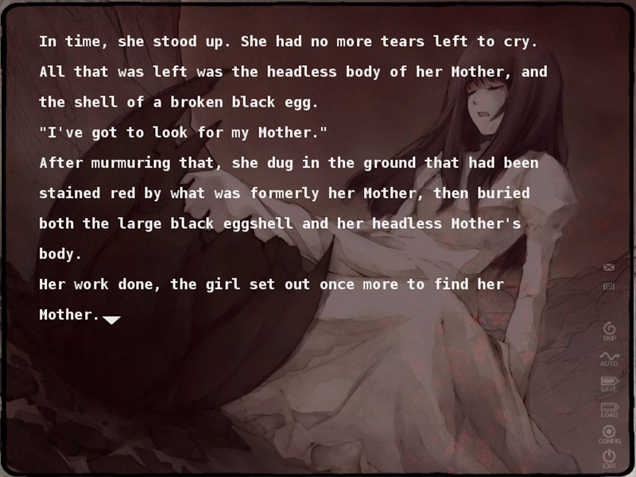
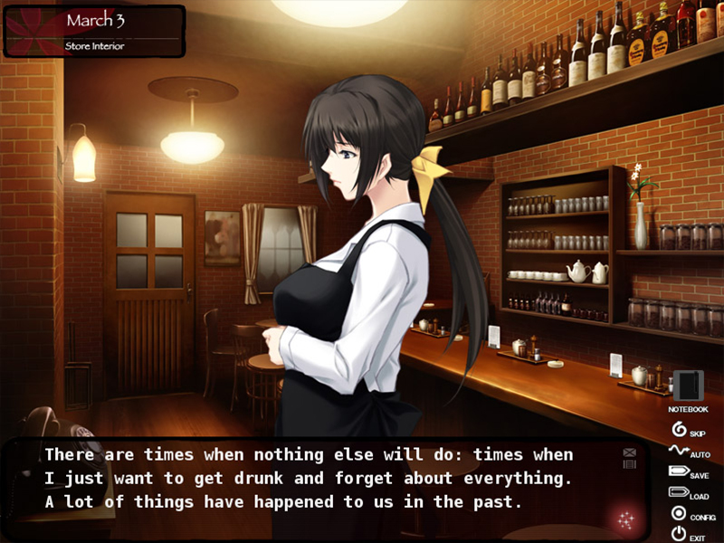
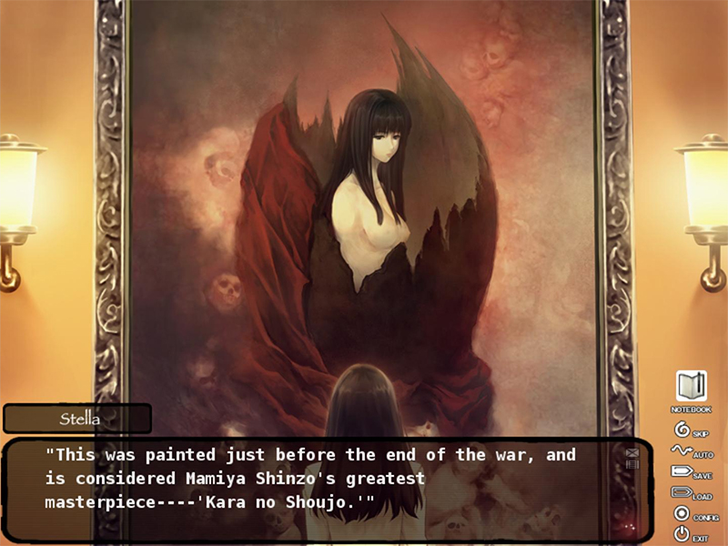

Kara no Shoujo
Release Date:
October 22, 2018
Developer:
Publisher
Genres:
Mystery, Thriller, Drama
Novel Length:
Anime Adaptation:
Prequel:
None

Reviews
"... Now that it's done - even with all the gore and emotional turmoil I went through - all I can think about is getting my hands on the sequel. I have to know what happens next."
"Kara no Shojo is a great murder mystery, with a lot of interaction. Its era and setting are perfect for the dread and isolation of the story."
"I don't know how much a recommendation means from a guy who hasn't read too many VNs compared to others, but I still had a blast reading through KnS."
About This Novel
March, 1956. Tokyo; a metropolis finally starting to recover ten long years after Japan's defeat in the War. Private eye Tokisaka Reiji accepts a strange request from a girl in Inokashira Park.
"I want you to look for something. Me. My true self."Meanwhile, a series of bizarre murders is plaguing the area, one where young women are disappearing, only to turn up dead and maimed with their wombs torn out. Seeking assistance on the case, Detective Uozumi Kyozo called up his old friend and former coworker, Reiji.
Ouba Girls Academy; a school on the outskirts of Hoya City. Reiji's little sister attends this school, where two young women have mysteriously vanished. Saeki Tokio, the vice principal, calls in Reiji to investigate their disappearance, giving him his third case.
Reiji infiltrates the academy as a substitute teacher to glean information from the students - but that's when he meets her once again.
Kuchiki Toko - his first clients, the girl who asked him to search for her true self. Her manner is distinctly boyish as she remarks:
"Heya - so we meet again, Mr. Detective."
The body count continues to rise. What should be a simple search for some students is staring to grow out of control. For some reason, the number of missing people and unidentified bodies don't match up.
Who will be chosen as the next victim?
As the endless cycle of tragedy continues, what mysteries lie behind these new cases? Behind a similar series of murders from six years ago?
Perhaps one girl's smile might await beneath the shell of tragedy...
(From VNDB)
Technical Details
Platforms:
Windows
Resolution:
4:3
English:
Fully Translated
Animated Scenes:
None
Voiced:
Fully
You Might Also Like


Get It Now


Recommended
Get It